Thesis: To Be Archived
Web + Book Design, 2023
To Be Archived aims to capture this nostalgic essence of personal style with contemporary fashion styling through a mixed media archive. Divided into two parts: this project captures a synopsis of my personal style journey and reflects upon my evolution through fashion. Accompanying the website is a journal that acts as an interactive guide and physical archive.
ToBeArchived.com
To Be Archived: Pitchdeck
ToBeArchived Montage
 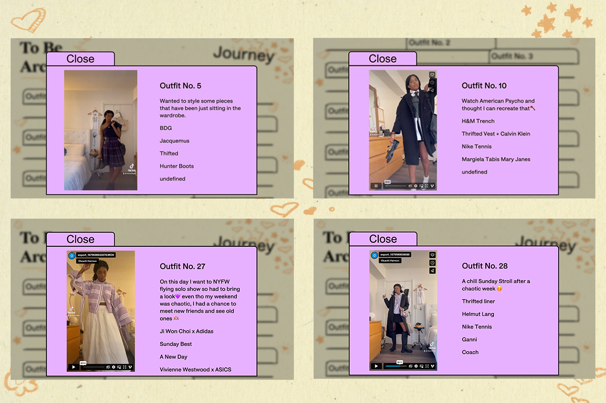
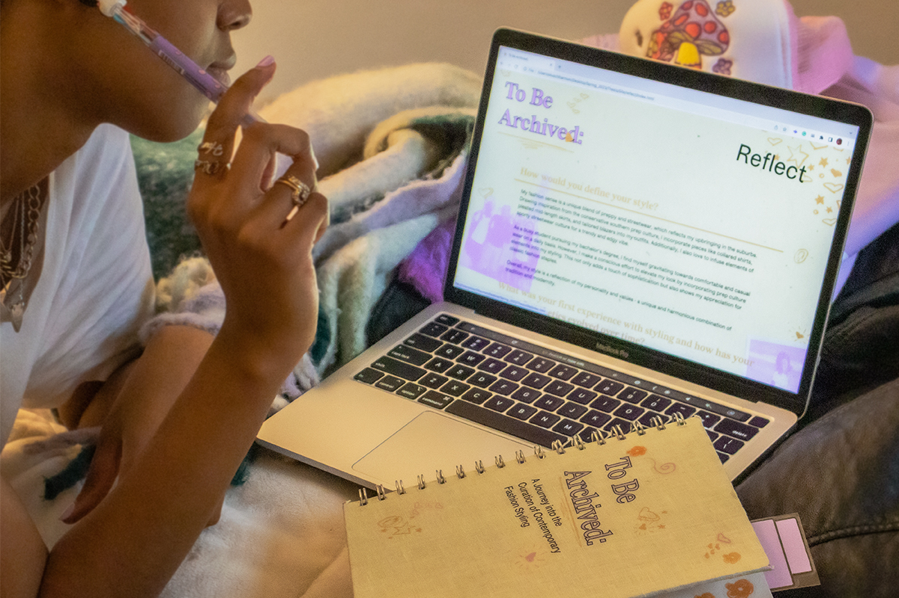
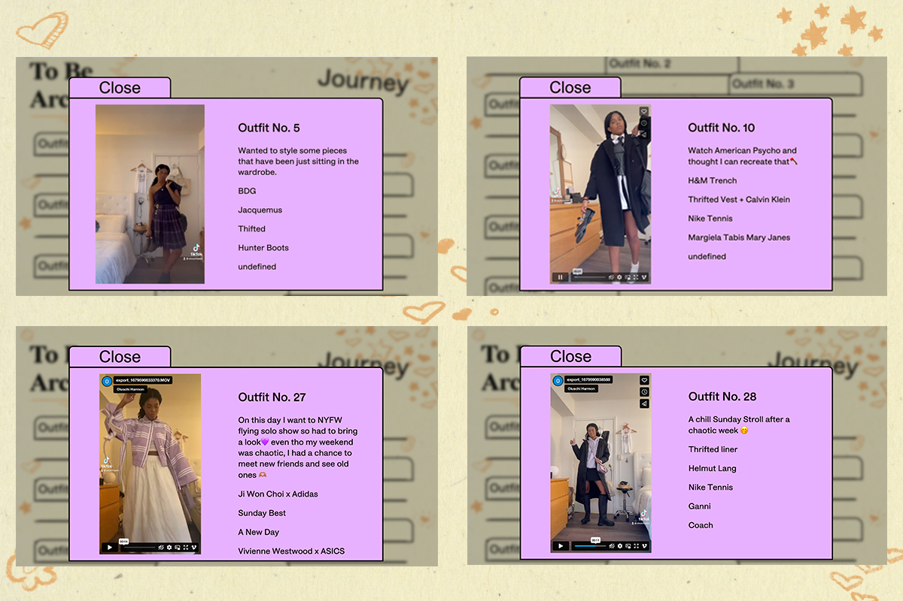
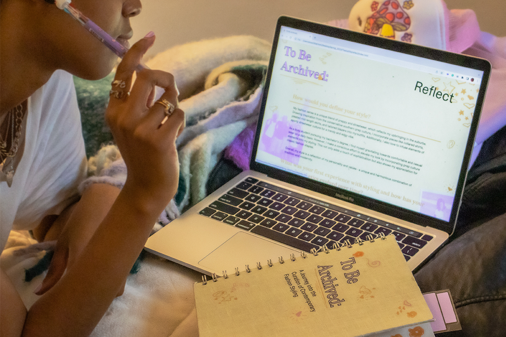
Digital Threads
Web Design + Research, 2023
“Digital Threads” delves into the realm of self-expression and storytelling through fashion styling, particularly in the context of the rise of social media. The pervasive influence of social media and digital technology has played a significant impact on the way individuals choose to express themselves through fashion.
DigitalThreads.com

Alright
Web Design + Development, 2021
Alright allows user to share positive notes and ideas with others through a leisurely and comforting design. The inspiration behind the site derives from Kendrick Lamar's hit song "Alright". This site is a place that provides aid and encouragement to those who may feel mentally and emotionally drained within today’s online platforms.
Alright.com
 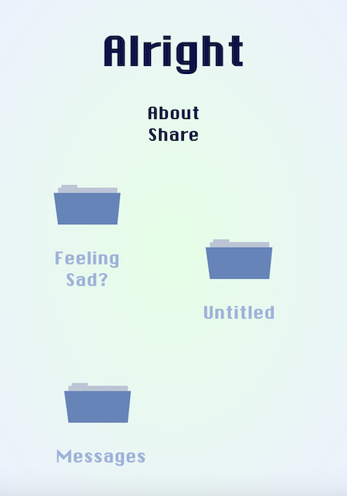
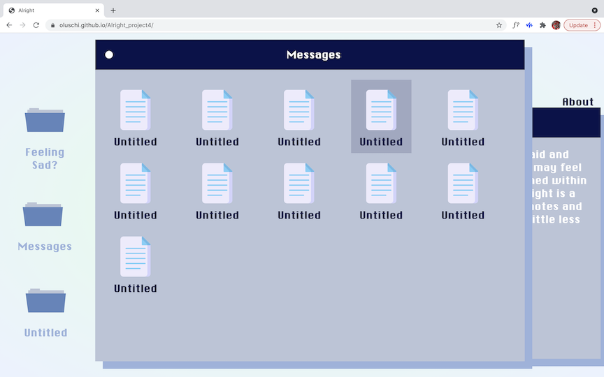
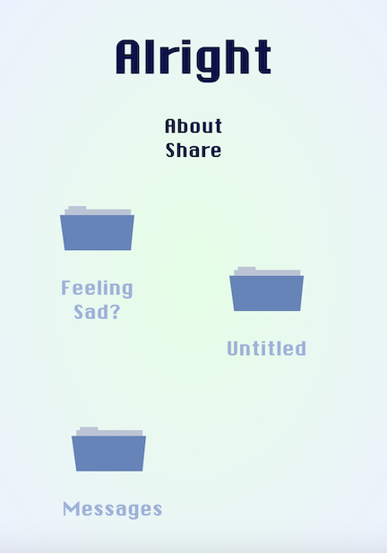
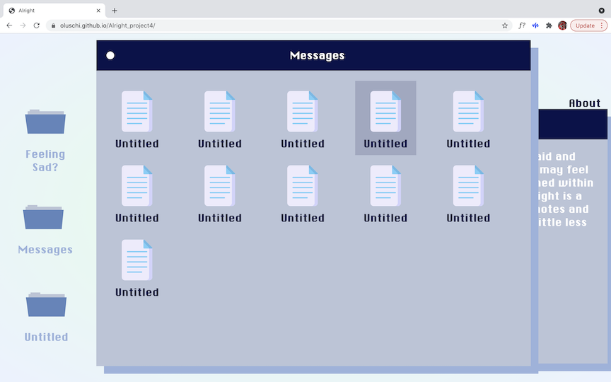
 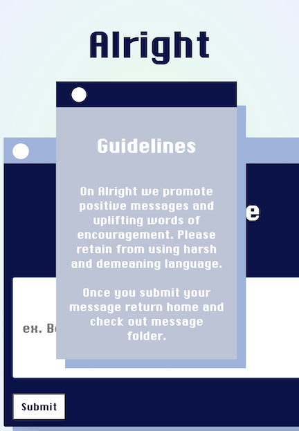
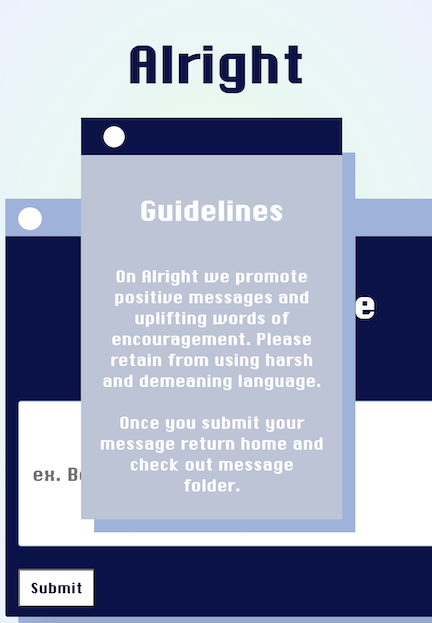
Gen Z Archives
Web Design + API, 2020
Inspired by the nostalgia of web design of the early 2000s, GenZ Archive is a collection of movies, televison shows, books, and games, that where popluar to this generation. Through the use of an api system, information can be easily updated and add to throughout the years to come.
GenZArchives.com
 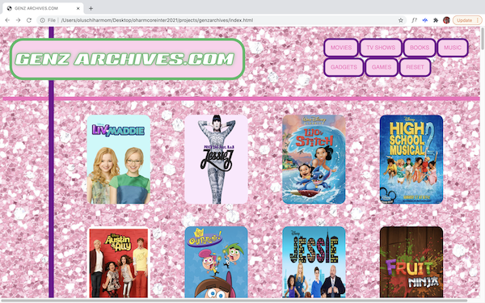
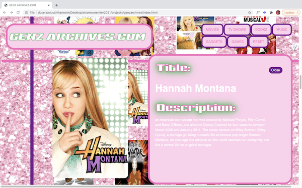
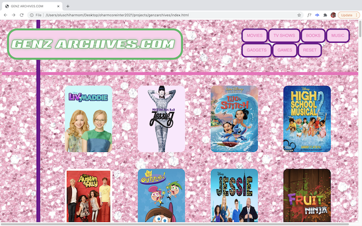
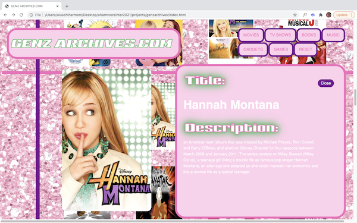